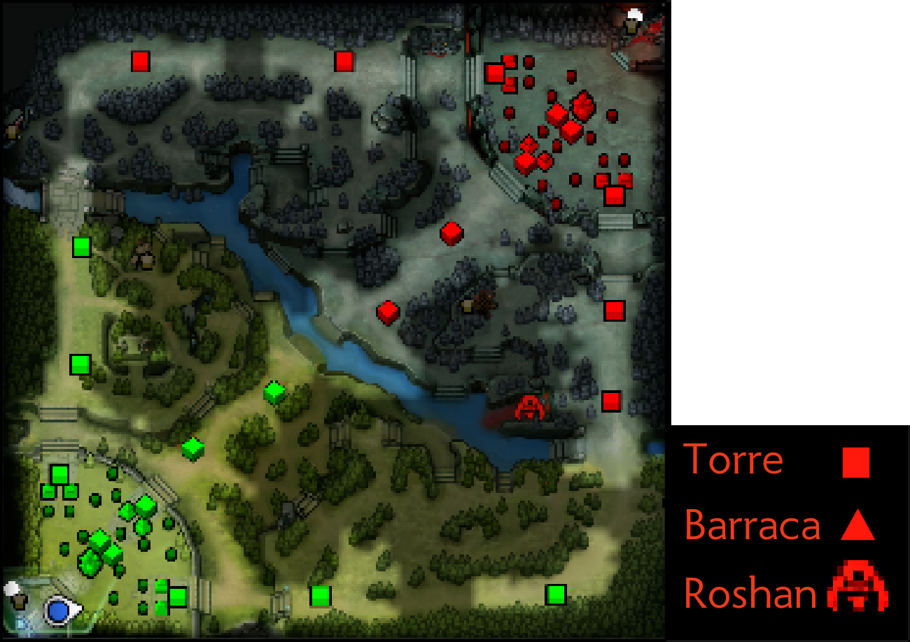

Defense of the Ancients 2 (DotA 2) é um jogo de estratégia e ação em tempo real - Action Real-Time Strategy (ARTS)
- desenvolvido pela empresa Valve em 2011, seguindo o sucesso do jogo original. DotA começou como um modo de jogo
feito por fãs usando como base o jogo Warcraft 3, desenvolvido pela Blizzard Entertainment em 2005.
Nesse jogo, 2 times de 5 jogadores se enfrentam em uma arena virtual, controlando unidades conhecidas como heróis
em um mapa que consiste de 3 corredores que ligam as bases dos 2 times. Em cada corredor, cada time possui 3 torres,
que precisam ser destruidas em ordem do centro do mapa até a base inimiga, para enfim destruir o ancião inimigo,
uma enorme estrutura no centro de cada base.

Vários aspectos levaram ao sucesso do jogo original, e consequentemente o lançamento da sua continuação oficial,
porém o mais importante é o seu aspecto competitivo, visto que o jogo é repleto de mecânicas que tornam a disputa
entre os times bastante dinâmica e interessante de assistir:
+ Exibir mecânicas
- Ocultar mecânicas
-
Heróis:
Cada um dos 5 jogadores da sua equipe deve escolher 1 dos 111 heróis disponíveis antes da batalha.
Cada um desse heróis possui um conjunto diferente de 4 habilidades que podem sinergizar com as de outros
membros da sua equipe, ou podem ser usadas para eliminar os heróis da equipe inimiga de maneira mais eficiente.
Além dessas habilidades, os heróis também possuem pontos de vida e de mana. O seu herói morre ao perder todos os pontos de vida,
sendo forçado a esperar alguns segundos na própria base até voltar a jogar. Pontos de mana são usados para usar as habilidades do
seu herói.
-
Lojas e Itens:
Em cada uma das bases e em algumas regiões do mapa, é possível encontrar lojas onde os heróis podem comprar itens.
De itens que podem ser usados para recuperar seus pontos de vida ou mana, à itens que melhoram o dano do seu herói
ou fornecem novas habilidades, todos os itens são comprados com ouro, e ocupam 1 dos 6 espaços disponíveis no seu inventário.
-
Ouro:
Ouro é a moeda do jogo, e é obtida ao eliminar criaturas que podem ser encontradas naos corredores, em acampamentos espalhados
pelo mapa e ao eliminar heróis inimigos.
-
Pontos de Experiência:
Assim como ouro, pontos de experiência são obtidos ao eliminar criaturas e heróis. Obter experiência é necessário para que heróis
possam ganhar níveis. A cada nível ganho, o seu herói pode aprender ou melhorar habilidades, e também ganhar mais pontos de vida e de mana.
-
Barracas e criaturas:
Dentro da base de cada equipe, e em cada um dos 3 corredores, existem 2 estruturas chamadas barracas.
Dessas barracas, a cada minuto de jogo, surgem unidades chamadas creeps (no começo, 3 de combate corpo-a-corpo e
1 de combate a distância), que movem pelo corredor em direção ao ancião inimigo, enfrentando todos os creeps,
heróis e torres inimigas no caminho. Destruir as barracas inimigas em cada corredor irá melhorar os seus creeps
naquele corredor, ajudando a sua equipe a avançar em direção à base inimiga. Para o jogador, derrotar os creeps inimigos
é importante, pois eles são a principal fonte dos recursos necessários para melhorar a eficiência do seu herói.
-
Roshan:
No lado direito do rio que cruza o centro do mapa, existe uma abertura que é lar de uma enorme criatura chamada
Roshan. Matar essa criatura irá presentear sua equipe com um item chamado Aegis da Imortalidade. O herói que tiver
esse item, ao morrer, renascerá em 3 segundos, sendo portanto capaz de continuar lutando, uma recompensa digna do
grande risco que é reunir a equipe para enfrentar o monstro. Derrotar o Roshan 3 vezes ou mais também recompensa
a equipe com uma grande roda de queijo, que ao ser consumida, recupera toda a vida e mana do seu herói.
❮ Retornar
Continuar ❯